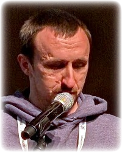
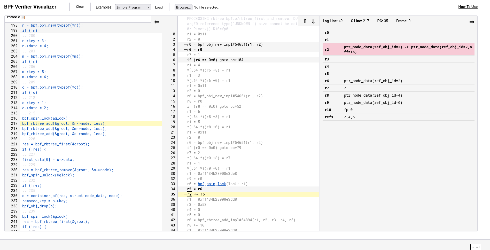
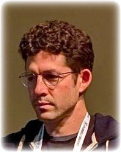

A visualizer for BPF program state
The BPF verifier is complicated. It needs to check every possible path that a BPF program's execution could take. The fact that its determination of whether a BPF program is safe is based on the whole lifetime of the program, instead of simple local factors, means that the cause of a verification failure is not always obvious. Ihor Solodrai and Jordan Rome gave a presentation (slides) at the 2025 Linux Plumbers Conference in Tokyo about the BPF verifier visualizer that they have been building to make diagnosing verification failures easier.
When the verifier rejects a BPF program, it produces a verification log
with a mixture of different information: the exact BPF instructions executed on the failing
path, calls to any kernel functions or BPF subprograms, line numbers
from the debugging information in the program, and information about the
contents of different registers and stack slots. This technically contains all of the information
needed to understand the failure, but in an "incomprehensible
" form,
Solodrai said. The logs don't include information about the previous states of
registers and stack slots, for example, so tracing through a log could involve
remembering context from a million instructions ago, which humans cannot do.

The solution is a tool that tracks the state of a program during verification and shows it to the programmer in a useful way. Solodrai and Rome have been working on the BPF verifier visualizer, a BSD-licensed tool written in TypeScript that does just that. It is a web-based application that lets one upload a verifier log for viewing. It then presents a three-panel view, showing the reconstructed C source code, the annotated verifier log, and the current state of the BPF virtual machine (as seen below). Solodrai demonstrated how clicking on a line in the C source code or in the verifier trace would automatically highlight the corresponding line in the other pane.
The pane showing the current state of the BPF program also uses colors to indicate which registers and stack slots were read from or written to, and includes visualizations for various different kinds of data, such as scalars and values from BPF maps. The BPF verifier uses a kind of static analysis based on abstract interpretation, so a register could hold a specific value such as "4", but it could also hold "an unknown number that is a multiple of 4 between 12 and 340". The visualizer does its best to show the simplest form of the value in a register.

Clicking on a register shows all of the instructions that influenced the value in that register, so one can trace back how a particular value was obtained. Execution in a BPF subprogram (i.e., a subroutine call) is indented to show the separation from the main program. Altogether, the demonstration proved compelling, with the attendees agreeing that the tool would be helpful for debugging.
Solodrai demonstrated using the visualizer to investigate a particular bug that Andrii Nakryiko had run into — one that wasn't obvious from the C source code of the BPF program. The problem happened in a function implementing stack unwinding:
int i = 0;
bpf_for(i, 1, MAX_STACK_DEPTH) {
...
// Verifier failure: "R2 unbounded memory access"
stack[i] = frame.ret_addr;
}
The verifier was rejecting the program on reaching the marked line, even though i is kept within bounds by the call to the bpf_for() macro. Investigating the generated assembly code in the BPF verifier showed the problem: the compiler was emitting the loop bounds check using register r1, and then calling a function that clobbered r1 before reloading the value for the access to stack. The verifier wasn't able to infer the connection between the check and the second load of the same value into r1, so it saw the access as using an index that had not been bounds-checked. Using the visualizer made that chain of circumstances a good deal easier to follow. The "solution" was to add a (redundant) bounds check and hope that the compiler doesn't manage to notice that the check is redundant and take it out.

Solodrai finished the talk by discussing some of the architectural decisions that he and Rome had made to ensure the visualizer could handle large verifier traces. He also included a shout out to the project's dependencies, including Vite, react-window, LocalData, and others.
One member of the audience asked whether the visualizer could also handle debugging dumps of a BPF program. Rome answered that it could not, it relies on parsing the verifier log. Solodrai suggested that programmers could dump the verifier log for successful programs with increased verbosity, although this could be somewhat unwieldy because it would include every possible path through the program in the output.
Another person asked which kernel versions were supported. "Good question. We
don't know,
" Solodrai answered. They're only testing against the most recent
kernel version, but in practice the verifier's log format is pretty stable, so
it should work for "most modern versions
" of the kernel. Daniel Borkmann
asked whether they had any plans to expose parts of the verifier's internal
state, which might be less stable. Solodrai replied that they had discussed the
idea of making some kind of binary format, but had ultimately decided against
it, since that would involve creating an entirely new format for debugging
information, which would be a lot of work for marginal benefit. The session
wrapped up there.
[ Thanks to the Linux Foundation, LWN's travel sponsor, for enabling me to travel to Tokyo to cover the Linux Plumbers Conference. ]
| Index entries for this article | |
|---|---|
| Kernel | BPF/Verifier |
| Conference | Linux Plumbers Conference/2025 |
Posted Jan 9, 2026 22:04 UTC (Fri)
by TheBicPen (guest, #169067)
[Link] (1 responses)
This makes me think that C is not the right language for this. Modern compilers transform C code so much that it's not very low-level at all, at least not on modern CPU architectures. I don't think the language of BPF will change anytime soon, nor should it, but I do wonder why C was chosen in the first place - was there any reason beyond "most Linux contributors are familiar with it and it is traditionally the most popular low-level language"? Formally verifiable languages like Ada/SPARK exist, but they are vastly different from languages like C. Is there a language that is a good middle ground between the 2 in the sense that it is designed for easy static analysis, but doesn't have the full rigour (and poor ergonomics) of full formal verification?
Posted Jan 30, 2026 21:07 UTC (Fri)
by aureliar (subscriber, #178791)
[Link]
I don't think you can say that C was chosen. ebpf and the verifier operate at the assembly level using the BPF ISA [1]. As such any compiled program that can output this assembly can be used to write ebpf programs (C, rust, zig, raw ASM...)
Now the problem is that because the verifier only works on the generated assembly, it competes with compiler than want to perform complex optimizations to generate better assembly. And thus you can get cases like this one where a valid compiler transformation could make the ebpf program fail at verification time.
But the fast that the verifier works at the assembly level is the exact thing that allows any other language to be used to write ebpf program. They just need to have a compiler that can output BPF ASM.
[1] https://docs.kernel.org/bpf/standardization/instruction-s...
Suitability of C for BPF
Suitability of C for BPF